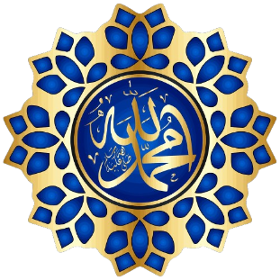
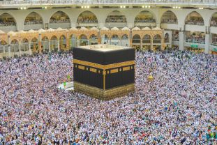
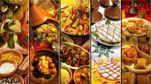
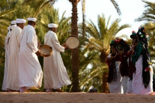
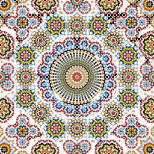
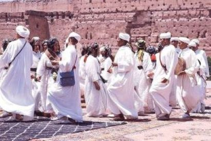

L'arabe et l'amazigh sont les langues officielles du Maroc.
L'islam est la religion dominante au Maroc.
La cuisine marocaine est célèbre pour ses délicieux plats.
La musique marocaine est variée avec de nombreux styles.
Le Maroc est réputé pour ses tapis, ses céramiques et plus.
Le Maroc célèbre diverses fêtes religieuses et festivals culturels.
